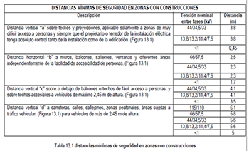

| ítem | Tipo de Medida | Exigencias del RETIE | Equipos a utilizar | Proceso en el que aplica | ENERGIZADO | CUMPLE SI | Observaciones | |
|---|---|---|---|---|---|---|---|---|
| SI | NO | |||||||
| 1 | Resistencia de puesta a tierra | Artículo 15 RETIE; Sección 250 NTC 2050. | 1.Telurómetro 2.Equipo de inyección de corriente 3.Pinzas de inyección y medida. |
1.Uso Final 2.Distribución 3.Transformación |
X | CUMPLE SI: Las medidas encontradas no superan los valores indicados |
En donde haya cable de guarda, este debe ser desconectado o usar un telurómetro de Alta Frecuencia (25 kHz). | |
| 2 | Corriente del sistema de Tiera | Artículo 9 RETIE | Pinza con rango mA | 1.Uso Final 2.Distribución 3.Transformación |
X | CUMPLE SI: Las corrientes de tierra no puedan inducir potenciales que generen corrientes de no superan los valores indicados |
En instalaciones energizadas se debe medir la corriente en el sistema de puesta a tierra. El parámetro de corriente al interior del sistema de puesta a tierra, dependerá de la evaluación del nivel de riesgo de la instalación, tal como lo indica el Artículo 9 del RETIE. | |
| 3 | Equipotencialidad y continuidad en conductores de puesta a tierra | Artículo 15.3.3 RETIE, Sección 250 NTC 2050 | Ohmímetro. | 1.Uso Final 2.Distribución 3.Transformación |
X | Marca continuidad e equipotencialidad ( R=0 ), entre Tierra y carcazas de tableros y equipos, entre Tierra y Neutro, entre todos los sistemas puestos a tierra, en terminales de tierra de los tomas | Verificar la continuidad eléctrica entre el sistema de puesta a tierra y todas las estructuras metálicas y equipos eléctricos asociados al sistema eléctrico inspeccionado | |
| 4 | Distancias de seguridad para puntos energizados. ESPACIOS DE TRABAJO | Artículo 13 RETIE, Artículo 29.4, 29.5 RETIE, Sección 110 NTC 2050 | 1.Cinta métrica 2.Pértiga 3.Telémetro 4. Medidor de distancia. |
1.Uso Final 2.Distribución 3.Transformación |
X | X | MENOS DE 150 V = VERTICAL = no debe ser inferior a 1,9 m de altura (medidos verticalmente desde el piso o plataforma) o la altura del equipo cuando este sea más alto HORIZONTAL = 0,75 m de ancho o el ancho del equipo si este es mayor. FRENTE AL EQUIPO: La profundidad del espacio de trabajo frente al equipo no debe ser inferior a 0,9 m. ENTRE 2500 V y 9000 V = VERTICAL no debe ser inferior a 1,9 m de altura (medidos verticalmente desde el piso o plataforma) o la altura del equipo cuando este sea más alto HORIZONTAL: 0,9 m de ancho o el ancho del equipo si este es mayor. FRENTE AL EQUIPO : la profundidad del espacio de trabajo no debe ser inferior a 1,5 m. Cuando se tengan equipos con un ancho superior a 1,8 m y una corriente nominal igual o superior a 1200 amperios, se deben tener dos (2) accesos al espacio de trabajo. En todo caso, se debe asegurar que el trabajador pueda evacuar el sitio. Se permitirá un solo acceso, cuando el ancho del espacio de trabajo sea de al menos el doble |
1. Los conductores denominados cubiertos o semi-aislados y sin pantalla (cable ecológico) deben ser considerados conductores desnudos para efectos de distancias de seguridad. A menos que se indique lo contrario, todas las distancias de seguridad deben ser medidas de superficie a superficie. Para la medición de distancias de seguridad, los accesorios metálicos normalmente energizados serán considerados como parte de los conductores de línea y las bases metálicas de los terminales del cable o los dispositivos similares, deben ser tomados como parte de la estructura de soporte |
| 5 | Distancias de seguridad de las construcciones a Redes energizadas | Artículo 13 RETIE, Sección 110 NTC 2050 | 1.Cinta métrica 2.Pértiga 3.Telémetro 4. Medidor de distancia. |
1.Uso Final 2.Distribución 3.Transformación |
X | X |  |
1. Los conductores denominados cubiertos o semi-aislados y sin pantalla (cable ecológico) deben ser considerados conductores desnudos para efectos de distancias de seguridad. A menos que se indique lo contrario, todas las distancias de seguridad deben ser medidas de superficie a superficie. Para la medición de distancias de seguridad, los accesorios metálicos normalmente energizados serán considerados como parte de los conductores de línea y las bases metálicas de los terminales del cable o los dispositivos similares, deben ser tomados como parte de la estructura de soporteF |
| 6 | ZONAS DE SERVIDUMBRE | RETIE 22.2 | 1.Cinta métrica 2.Telémetro 3. Medidor de distancia. |
1.Uso Final 2.Distribución 3.Transformación |
X | X | |
No se deben construir edificios, edificaciones, viviendas, casetas o cualquier tipo de estructuras para albergar personas o animales. Tampoco se debe permitir alta concentración de personas en estas áreas de servidumbre, o la presencia permanente de trabajadores o personas ajenas a la operación o mantenimiento de la línea, ni el uso permanente de estos espacios como lugares de parqueo, o reparación de vehículos o para el desarrollo de actividades comerciales o recreacionales |
| 7 | Resistencia de aislamiento | Numeral 20.23.4 RETIE. | Meghómetro | 1.Uso Final 2.Distribución 3.Transformación |
X | Realizar las pruebas de aislamiento: Las mediciones deben ser realizadas usando un megómetro a una tensión de por lo menos 500 Vcc. El valor de la resistencia de aislamiento debe ser no menor de 1000 Ω/V | 1. La resistencia de aislamiento debe ser superior a 1 M-Ohm, cuando las tensiones de prueba sean de 500 o 1000 VDC, como procedimiento válido para esta medición se pueden seguir las consideraciones y parámetros de la norma IEC 60364-6, numeral 61.3.3.
2. Esta medición se realiza para instalaciones de menos de 1000 V. Para tensiones mayores se deberá seguir las normas y procedimientos apropiados para realizar esta prueba y el equipo apropiado para el nivel de tensión. 3. Estas medidas se efectúan en circuitos sin tensión, es decir desconectados de su fuente de alimentación habitual, ya que en caso contrario se podría averiar el probador de baja tensión del equipo. 4. La medición de resistencia de aislamiento se realiza en: * En el 100% de las instalaciones (acometidas y alimentadores), excepto en circuitos ramales de alumbrado y tomas para los cuales se definirán los porcentajes de muestreo en la guía técnica específica para este propósito. |
|
| 8 | Niveles de iluminación | Articulo 17 RETIE | Luxómetro | "1.Uso Final
2.Transformación: S/E interiores, Exteriores, patio de maniobras. |
X | En los lugares en los que estén situados los equipos de emergencia como extintores y camillas, en las instalaciones de protección contra incendios de utilización manual y en los tableros de distribución del alumbrado, la iluminancia horizontal será mínimo de 5 lux a la altura del plano de uso.
Las rutas de evacuación deben estar claramente visibles, señalizadas e iluminadas con un sistema autónomo con batería, con un mínimo de: 5 lux y 40% de uniformidad y un máximo del 20% de deslumbramiento, aún en condiciones de humo o plena oscuridad. |
1. En las medidas de iluminación, los valores registrados con los luxómetros deben ser tomados sobre las áreas o puestos de trabajo o en su defecto por lo menos a 0,75 m o 0,80 m de altura del suelo. Estos valores no deben ser afectados por iluminación natural externa. El nivel exigido para la inspección será el mínimo valor indicado en el numeral 17,1 RETIE.
2. Exigencias y metodología del RETILAP |
|
| 9 | Campo eléctrico y magnético. | Articulo 14 RETIE | 1.Medidor de campo Eléctrico
2.Medidor de campo magnético (Gausímetro) |
1. Uso Final 2.Distribución 3.Transformación 4.Transmisión 5.Generación |
X | CUMPLE SI: Las medidas encontradas no superan los valores indicados |
Se deben presentar los cálculos de acuerdo con el RETIE, Tabla 14,1, en los casos en los que aplique y se debe medir en subestaciones y redes de media y alta tensión energizados, cuando se encuentren en cercanías de centros de alta concentración de personas o cuando se detecte la existencia de altas corrientes para flujo magnético y altas tensiones para campos eléctricos, luego de la energización. | |
| 10 | Ensayo de interruptores GFCI | Artículo 37.2 RETIE. | Probador de polaridad con disparo de protección. | 1.Uso Final | X | El toma GFCI funciona de acuerdo a lo indicado. Encendido verde del probador | 1. Los tomacorrientes GFCI deben:
* Ser certificados para tal uso * Poseer una señal que indique su funcionamiento y mecanismo que verifique su adecuada operación * Se verificara su instalación y su conexión en el circuito destinado para estos. * La prueba se debe realizar con el circuito energizado y con el equipo apropiado. * Para el uso de circuitos con tomas GFCI que controlen otras tomas sin esta característica, se verificara que esta operación sea aceptada y certificada por el fabricante. |
|